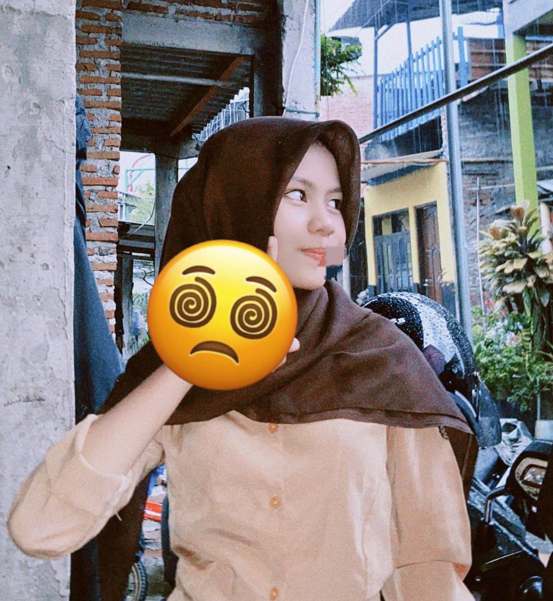

Saya, Ayu Kusuma Dewi, adalah seseorang yang senang berkembang dan belajar hal-hal baru. Bagi saya, setiap proses dan pengalaman memiliki makna untuk membentuk diri menjadi lebih baik. Saya percaya dengan terus mencoba, belajar dari kesalahan, dan tidak mudah menyerah, saya bisa mencapai tujuan yang saya inginkan.